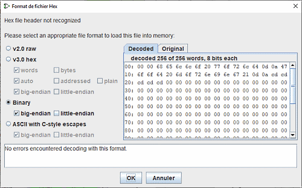

上一节: 弹出菜单和文件
内存文件面板
当文件识别无法确定数据结构的类型时，将打开此窗口。 它由一系列用于指定转换选项的复选框组成。 两个显示文件数据的十六进制显示选项卡和一个显示可能已检测到的任何错误的文本框。

四个单选按钮用于选择上面显示的文件结构类型之一。 对于每种类型，复选框将被激活。 它们允许您指定特定选项。
您可以在专门针对这些类型的页面中找到信息
十六进制显示面板允许您观察 Logisim-evolution 如何解码文件。

并将其与原始版本进行比较。

下面您将看到有关解码和发现的任何错误的报告。

下一节: 记忆戳 .